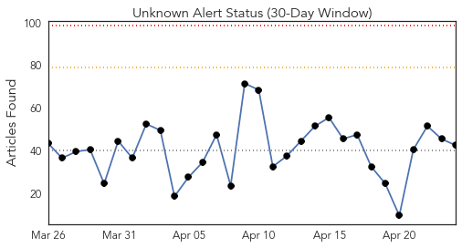
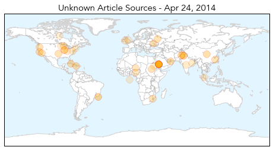
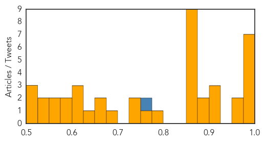

Unknown
30-Day Web Trend
0 alerts, 0 warnings

30-Day Twitter Trend
1 alerts, 0 warnings

Article Locations

Article Confidences
Top Articles:
- 0.996
- New Cases of MERS Virus Found in Saudi Arabian Cities
- 0.996
- Soaring MERS Cases Cause Pandemic Jitters, but Causes Are Unclear
- 0.989
- Phuket prepares to combat virus from Middle East
- 0.989
- 7 frequently asked questions about Mers and their answers
- 0.987
- Mers spread accelerates; 17 new cases in Saudi
- 0.985
- Deadly Virus in Saudi Arabia Could Spread Globally
- 0.980
- Health And Family, Lifestyle Features, The Philippine Star
- 0.973
- Gulf Daily News World News Four more virus deaths in Saudi
- 0.967
- The Economist
- 0.917
- Chicago Tribune
- 0.917
- Chicago Tribune
- 0.917
- Chicago Tribune
- 0.892
- Multi-State Salmonella Outbreak Linked to Pet Bearded Dragons
- 0.876
- Tick-borne illness and blood donations
- 0.870
- STD Cases Rise Nationally; Residents Encouraged to Get Tested
- 0.866
- News, Information and Connections for Action
- 0.866
- Law enforcement incident prompts alert for San Diego-area naval base
- 0.866
- Russia demands U.S. stop Ukrainian military operation
- 0.866
- Platinum producers to take wage offer direct to striking miners
- 0.866
- Ukraine president calls on Russia to pull back troops from border
- 0.866
- A woman works in the field during a dust storm in Hami
- 0.866
- Storm chaser photographer Brad Mack checks out the radar on his laptop as thunderstorms supercells pass through areas in Erick, Oklahoma
- 0.854
- Don’t kiss that turtle, stop touching that bearded dragon and stop touching yourself: CDC reports 132 sick in multistate outbreak of human Salmonella Cotham
- 0.791
- 1.6 million malaria cases reported every year in Pakistan
- 0.765
- Malaria Chemoprevention Protects Children
- 0.746
- Agricultural Ministry Investigating Possible Atypical Case
- 0.745
- Polio: Peshawar reports fourth case
- 0.684
- IDPH warns of rising STDs in Illinois
- 0.667
- Winning the battle against malaria
- 0.652
- Malaria vaccine trials on humans said to be ‘very promising’
- 0.631
- ‘Delay’ in surgery cuts teenager’s life short
- 0.621
- Celiac disease risk, high in children with irritable bowel syndrome
- 0.612
- Malaria still a burden
- 0.608
- Manpower shortage hits Gumla sadar hospital
- 0.593
- Producers want more federal help to combat deadly pig virus - Winnipeg
- 0.578
- KUNA : Malaysia to check passengers coming from Mideast for Coronavirus
- 0.553
- News, Weather, Sports, Breaking News
- 0.552
- New report ranks the health of Minnesota’s 87 counties
- 0.548
- Brazil investigates possible mad cow case
- 0.548
- Aid Effort Claws its Way Forward Amid Mud and Uncertainty
- 0.523
- Better PED defence for Alberta's swine industry
- 0.517
- Brazil investigates possible mad cow case
- 0.514
- The Berkshires online guide to events, news and Berkshire County community information.
Top Tweets:
- 0.773
- RT: @WHO WHO EMRO press release - concern with rising numbers of MERS CoV cases two outbreaks in health care facilities http://t…